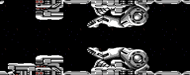

<meta charset="utf-8">
<meta name="viewport" content="width=device-width, initial-scale=1">
<title>{{title}}</title>
<link rel="preconnect" href="https://fonts.googleapis.com">
<link rel="stylesheet" href="https://fonts.googleapis.com/css2?family=Lato:wght@400;700;900&family=IBM+Plex+Mono:wght@400;500&display=swap">
<link rel="stylesheet" href="reference/r-type-page.css">
<!-- tabs -->
<header class="hero">
  <p class="eyebrow">{{platform}} · {{year}} · {{publisher}}</p>
  <h1>{{title}}</h1>
  <p class="sub">A two-player game nobody can start, credits nobody sees, a stage drawn half upside down, and the leftovers of stage 7 inside stage 8.</p>
</header>
<main class="wrap">
<section id="two-players" data-part="game">
  <p class="fig">Two players</p>
  <h2 class="t">A two-player game that the title never offers</h2>
  <p class="lede">The game keeps everything a second player would need: a 2UP label on the panel, a PLAYER TWO message, and code that hands the game to the other player when a ship is lost (<code>stage_end</code>, <code>$0978</code>) (<code>two_players</code>, <code>$2820</code>). The C64-Wiki notes the two-player code is there but unused.<sup class="fn"><a href="about.html#src-1" title="C64-Wiki, R-Type">1</a></sup></p>
  <p>The reason is a single wrong instruction. After GAME OVER the prompt is printed from a table of lines, and two more lines wait in the table, an “OR” and a two-player choice. The loop that should store them on the screen loads them instead, an <code>LDA</code> where an <code>STA</code> belongs, so they never appear (<code>game_over</code>, <code>$5E47</code>, the loop at <code>$5EAA</code>). The key test that follows accepts F1 alone, and the game sets <code>two_players</code> to the key’s code less 4, which for F1 is always 0.</p>
</section>

<section id="credits" data-part="game">
  <p class="fig">Hidden credits</p>
  <h2 class="t">Four credits in the code that no screen shows</h2>
  <p class="lede">Manfred Trenz and Andreas Escher are credited four times inside the program, in plain text that nothing prints. Three start with a word that sounds like an answer to someone: “EVEN:”, “ALWAYS:” and “AND AGAIN:”, each followed by “CODING AND GAMEDESIGN BY MANFRED TRENZ GRAFIX BY ANDREAS ESCHER AND MANFRED TRENZ”. The fourth has twelve spaces in front.</p>
  <div class="tw" role="region" aria-label="Hidden credits" tabindex="0"><table class="t">
    <tr><th>Where</th><th>Starts with</th></tr>
    <tr><td><code>credits_1</code>, <code>$36AB</code></td><td>EVEN:</td></tr>
    <tr><td><code>credits_2</code>, <code>$3CFE</code></td><td>ALWAYS:</td></tr>
    <tr><td><code>credits_3</code>, <code>$429E</code></td><td>AND AGAIN:</td></tr>
    <tr><td><code>credits_4</code>, <code>$5A86</code></td><td>twelve spaces</td></tr>
  </table></div>
  <p class="cap">The credits that the player does see come at the <a href="index.html#ending">ending</a>.</p>
</section>

<section id="upside-down" data-part="level-1">
  <p class="fig">Stage 1</p>
  <h2 class="t">The station’s floor is its ceiling turned over</h2>
  <p class="lede">Stage 1 loads a second character set in its third file, at <code>$E000</code>. Its first 175 characters are the stage’s own set with every character stored upside down (<code>stage1_chars_flipped</code>, <code>$E000</code>). The interrupt that starts the lowest band of sprites switches the screen to that set, so the same map bytes draw a ceiling in the upper half and a floor in the lower half, and the stage needs only half as many shapes for its girders.</p>
  <figure class="overview-shot"><figcaption>A stretch of stage 1 from the <a href="levels.html#stage-1">Maps</a> tab. The floor is the same characters as the ceiling, drawn from the upside-down set.</figcaption></figure>
</section>

<section id="leftovers" data-part="level-8">
  <p class="fig">Stage 8</p>
  <h2 class="t">Stage 8 still carries pieces of stage 7</h2>
  <p class="lede">The files of stage 8 are longer than stage 8 needs. Bytes <code>$832F</code> to <code>$867D</code> of its first file are exactly the end of stage 7’s attack script, and the tail of its second file, <code>$9086</code> to <code>$961B</code>, is the end of stage 7’s second file: the last of stage 7’s map blocks, its block list, its frame routine and the four frames of its animated characters (<code>stage7_leftover_script</code>, <code>stage7_leftover_file2</code>).</p>
  <p>Both copies were compared byte for byte with stage 7’s files. Stage 8 reads none of it: its script ends earlier, and its frame hook is the game’s plain <code>RTS</code> at <code>$17FA</code>.</p>
</section>

<section id="crystal-reset" data-part="game">
  <p class="fig">Weapons</p>
  <h2 class="t">Five crystal colours would reset the machine</h2>
  <p class="lede">When a crystal is collected, <code>collect</code> looks the weapon up by the crystal’s colour and writes its address into the <code>JSR</code> at <code>$3B98</code>, which every press of fire then calls. The table is split into two halves of eight, low bytes and high bytes (<code>weapon_lo</code>, <code>$1BFC</code>; <code>weapon_hi</code>, <code>$1C04</code>).</p>
  <p>Only red, blue and yellow have weapons. The other five entries point at <span data-part=""><code>$FCE2</code></span>, the KERNAL’s reset, so a crystal of any other colour would restart the computer at the next shot. The game only gives crystals those three colours (<code>pickup_colours</code>, <code>$1B49</code>).</p>
</section>

<section id="ending-tunes" data-part="ending">
  <p class="fig">The ending</p>
  <h2 class="t">Two ending tunes that never play</h2>
  <p class="lede">The ending file carries its own copy of the music driver and a music block with three tunes. It starts tune 0 (<code>$8025</code>) and nothing ever asks for the other two, which repeat every 1,760 and 6,528 frames. The <a href="music.html#ending-tunes">Music tab</a> plays all three.</p>
</section>

<section id="wipe" data-part="ending">
  <p class="fig">The ending</p>
  <h2 class="t">The last key press wipes the machine</h2>
  <p class="lede">A press of space at the end copies a short routine to the stack page and runs it there. It banks out every ROM, fills memory from <span data-part=""><code>$0200</code></span> to <span data-part=""><code>$FFFF</code></span> with zeros, and jumps into the KERNAL’s reset (<code>ending_reset</code>, <code>$80BE</code>). Nothing of the game survives.</p>
</section>

<section id="dropped" data-part="level-6">
  <p class="fig">Stage 6</p>
  <h2 class="t">The stage some lists say was dropped</h2>
  <p class="lede">MobyGames says that the transport system, the arcade game’s sixth stage, was left out of the Commodore 64 version, and that the game has no ending.<sup class="fn"><a href="about.html#src-4" title="MobyGames, R-Type trivia">4</a></sup> The disk has both. Stage 6 is files P, Q and R, with its own map, enemies, music and frame routine (<code>stage6_frame</code>, <code>$9286</code>), and the route through the game reached it and the ending after stage 8.</p>
  <p>What stage 6 does lack is a boss. Like stage 7, it ends when the waves run out (<a href="gameplay.html#bosses">Gameplay</a>).</p>
</section>

<section id="crack" data-part="game">
  <p class="fig">The crack</p>
  <h2 class="t">What the crackers changed, and the tape code left behind</h2>
  <p class="lede">This copy is a disk crack by Oneway. In place of the tape loader the crackers put a short disk loader at <code>$6200</code> that loads each stage’s three files by letter, A to X, and the ending as Y (<code>crack_loader</code>, <code>$6200</code>; <code>crack_letters</code>, <code>$6300</code>). They added the <a href="controls.html#crack">left-arrow key</a> that wins a stage, and replaced the test for the cassette’s PLAY button after GAME OVER with two <code>NOP</code>s, so the “PRESS PLAY ON TAPE” prompt goes straight on to the load.</p>
  <p>The tape version’s own set-up is still in the program. A routine copies 4 KB into the memory under the I/O chips, where the shapes that are always in memory live, and lays out the status panel after the load (<code>tape_setup</code>, <code>$1794</code>), and the only call to it, at <code>$0815</code>, is never reached in the crack. GAME OVER still asks the player to “PLEASE REWIND TAPE”.</p>
</section>
</main>
</main>
<footer style="margin:16px 0 0;padding:22px var(--gx) 0;border-top:1px solid #e0ded8;font-family:'IBM Plex Mono',ui-monospace,Menlo,monospace;font-size:12px;color:#80838a"><a href="https://github.com/gamesexplained/gamesexplained" aria-label="GitHub" style="display:inline-flex;align-items:center;justify-content:center;width:26px;height:26px;margin-left:8px;border:1px solid #e0ded8;border-radius:7px;background:#ffffff;color:#80838a;vertical-align:middle"><svg width="15" height="15" viewBox="0 0 24 24" fill="currentColor" aria-hidden="true"><path d="M12 .297c-6.63 0-12 5.373-12 12 0 5.303 3.438 9.8 8.205 11.385.6.113.82-.258.82-.577 0-.285-.01-1.04-.015-2.04-3.338.724-4.042-1.61-4.042-1.61C4.422 18.07 3.633 17.7 3.633 17.7c-1.087-.744.084-.729.084-.729 1.205.084 1.838 1.236 1.838 1.236 1.07 1.835 2.809 1.305 3.495.998.108-.776.417-1.305.76-1.605-2.665-.3-5.466-1.332-5.466-5.93 0-1.31.465-2.38 1.235-3.22-.135-.303-.54-1.523.105-3.176 0 0 1.005-.322 3.3 1.23.96-.267 1.98-.399 3-.405 1.02.006 2.04.138 3 .405 2.28-1.552 3.285-1.23 3.285-1.23.645 1.653.24 2.873.12 3.176.765.84 1.23 1.91 1.23 3.22 0 4.61-2.805 5.625-5.475 5.92.42.36.81 1.096.81 2.22 0 1.606-.015 2.896-.015 3.286 0 .315.21.69.825.57C20.565 22.092 24 17.592 24 12.297c0-6.627-5.373-12-12-12"/></svg></a><a href="https://discord.gg/3V9GWyRDWV" aria-label="Discord" style="display:inline-flex;align-items:center;justify-content:center;width:26px;height:26px;margin-left:8px;border:1px solid #e0ded8;border-radius:7px;background:#ffffff;color:#80838a;vertical-align:middle"><svg width="15" height="15" viewBox="0 0 24 24" fill="currentColor" aria-hidden="true"><path d="M20.317 4.3698a19.7913 19.7913 0 00-4.8851-1.5152.0741.0741 0 00-.0785.0371c-.211.3753-.4447.8648-.6083 1.2495-1.8447-.2762-3.68-.2762-5.4868 0-.1636-.3933-.4058-.8742-.6177-1.2495a.077.077 0 00-.0785-.037 19.7363 19.7363 0 00-4.8852 1.515.0699.0699 0 00-.0321.0277C.5334 9.0458-.319 13.5799.0992 18.0578a.0824.0824 0 00.0312.0561c2.0528 1.5076 4.0413 2.4228 5.9929 3.0294a.0777.0777 0 00.0842-.0276c.4616-.6304.8731-1.2952 1.226-1.9942a.076.076 0 00-.0416-.1057c-.6528-.2476-1.2743-.5495-1.8722-.8923a.077.077 0 01-.0076-.1277c.1258-.0943.2517-.1923.3718-.2914a.0743.0743 0 01.0776-.0105c3.9278 1.7933 8.18 1.7933 12.0614 0a.0739.0739 0 01.0785.0095c.1202.099.246.1981.3728.2924a.077.077 0 01-.0066.1276 12.2986 12.2986 0 01-1.873.8914.0766.0766 0 00-.0407.1067c.3604.698.7719 1.3628 1.225 1.9932a.076.076 0 00.0842.0286c1.961-.6067 3.9495-1.5219 6.0023-3.0294a.077.077 0 00.0313-.0552c.5004-5.177-.8382-9.6739-3.5485-13.6604a.061.061 0 00-.0312-.0286zM8.02 15.3312c-1.1825 0-2.1569-1.0857-2.1569-2.419 0-1.3332.9555-2.4189 2.157-2.4189 1.2108 0 2.1757 1.0952 2.1568 2.419 0 1.3332-.9555 2.4189-2.1569 2.4189zm7.9748 0c-1.1825 0-2.1569-1.0857-2.1569-2.419 0-1.3332.9554-2.4189 2.1569-2.4189 1.2108 0 2.1757 1.0952 2.1568 2.419 0 1.3332-.946 2.4189-2.1568 2.4189Z"/></svg></a><br>© Games Explained contributors. Write-ups, facts and symbol maps are available under <a href="https://creativecommons.org/licenses/by-sa/4.0/" style="color:#1f5fa8;text-decoration:none">CC BY-SA 4.0</a>; code under <a href="https://opensource.org/licenses/MIT" style="color:#1f5fa8;text-decoration:none">MIT</a></footer>
